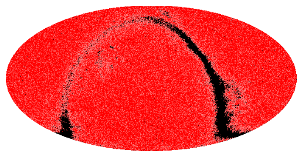
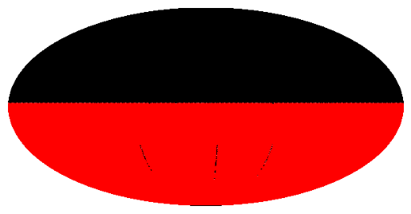

Get the MOC corresponding to a table¶
[1]:
from mocpy import MOC
[2]:
gum_qso_moc = MOC.from_vizier_table("VI/137/gum_qso", nside=512)
WARNING: Keyword 'TTYPE1' found more than once in a same HDU! We use the first occurrence.
[3]:
gum_qso_moc.display_preview()

[4]:
denis_moc = MOC.from_ivorn("ivo://CDS/B/denis/denis", nside=64)
denis_moc.display_preview()
WARNING: Keyword 'TTYPE1' found more than once in a same HDU! We use the first occurrence.
